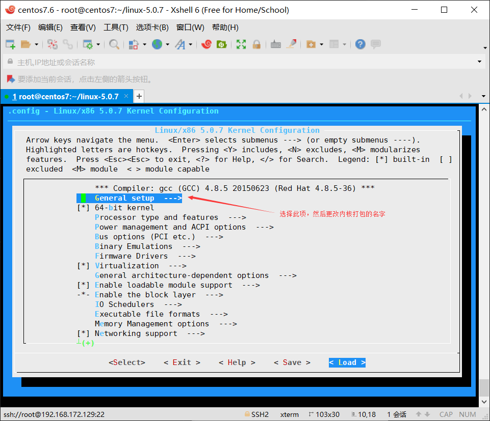
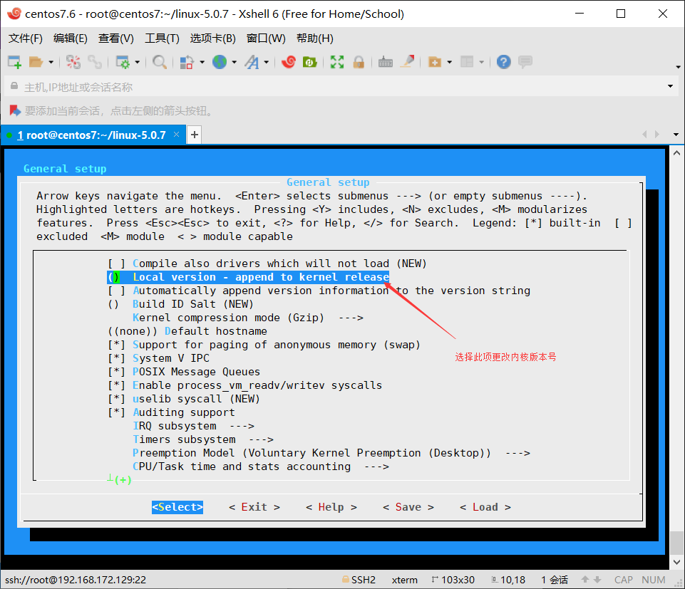
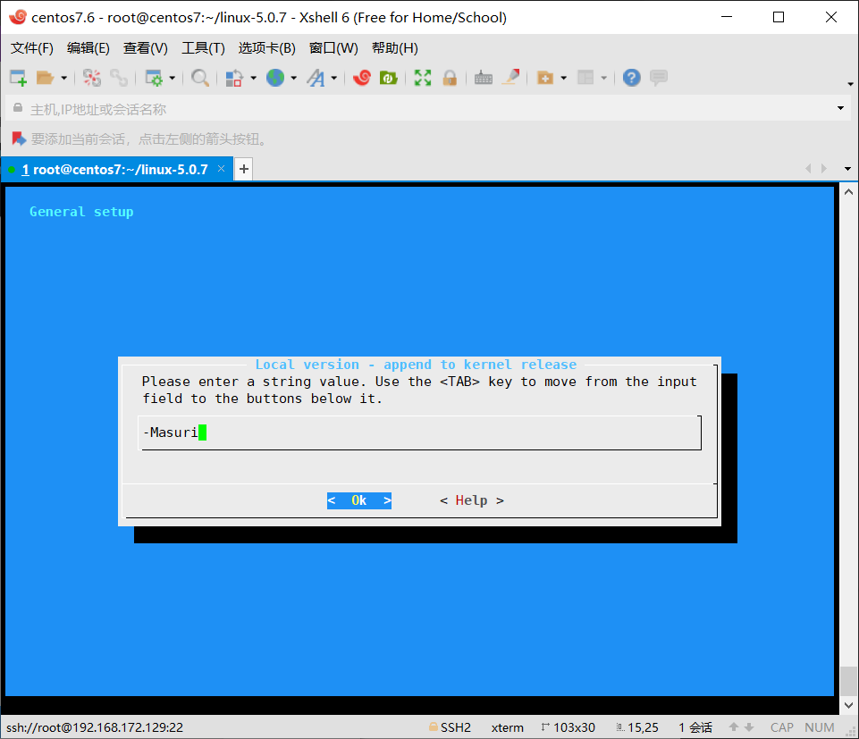
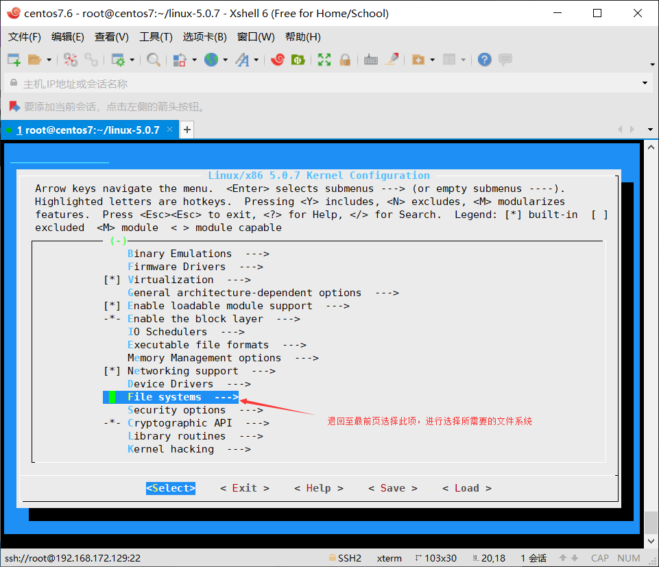
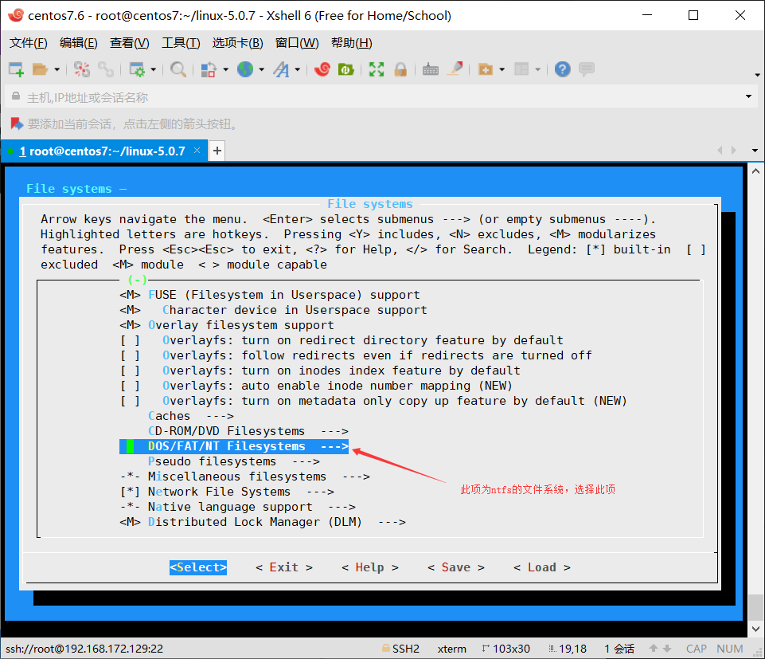
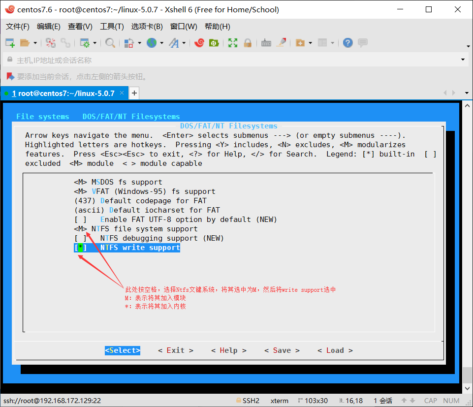
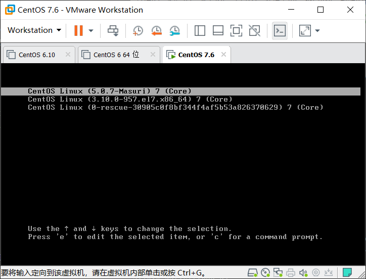

编译安装linux-5.07内核
编译安装linux-5.07内核
在生产环境中某些软件依赖于较新的内核，此时就需要将内核进行升级，以下为演示手动编译安装较新的5.07内核的方法。
一、下载内核
至内核官方网站下载内核www.kernel.org
二、解压内核文件
1 | [root@centos7 ~]# tar xf linux-5.0.7.tar.xz |
三、准备.config文件
由于内核编译需要依靠.config这个配置文件，可以在系统自带的config文件的基础上进行修改，系统自带的config文件在/boot目录下，需要将其复制到内核解压的目录下并改名为.config
1 | [root@centos7 ~]# cp /boot/config-3.10.0-957.el7.x86_64 ~/linux-5.0.7/.config |
四、安装编译内核所需要的一些工具
1 | [root@centos7 ~]# yum install gcc gcc-c++ glibc glibc-devel pcre pcre-devel ncurses-devel flex bison-devel bison perl-Test-Fatal openssl-devel elfutils-libelf-devel -y |
五、执行make menuconfig命令
1 | [root@centos7 linux-5.0.7]# make menuconfig |
以下开始进入编译内核选项






六、开始编译
1 | [root@centos7 linux-5.0.7]# make -j 12 |
七、执行make modules_install
执行make modules_install 在/lib/modules目录下生成新的内核模块
1 | [root@centos7 linux-5.0.7]# make modules_install |
八、生成内核
1 | [root@centos7 linux-5.0.7]# make install |
九、重启选择5.07内核
重启选择新的内核

1 | [masuri@centos7 ~]$ uname -r |
内核的卸载
一、删除/lib/modules下相应的内核文件
1 | [root@centos7 ~]# rm -rf /lib/modules/5.0.7-Masuri/ |
二、删除boot下的相关内核文件
1 | [root@centos7 ~]# rm -rf /boot/*-5.0.7-* |
三、清理grub2
此时/boot/grub2/grub.cfg中还有残留的版本信息，需要将其清理干净
1 | menuentry 'CentOS Linux (5.0.7-Masuri) 7 (Core)' --class centos --class gnu-linux --class gnu --class os --unrestricted $menuentry_id_option 'gnulinux-3.10.0-957.el7.x86_64-advanced-45490aa4-cf29-420d-a606-af32688b6707' { |
清理方法使用grub2-mkconfig重新生成新的grub.cfg文件
1 | [root@centos7 ~]# grub2-mkconfig -o /boot/grub2/grub.cfg |
其他
若要使用ntfs文件系统，可以不必重新编译内核，只需要安装ntfs-3g包就行，此包在epel源中。
本博客所有文章除特别声明外，均采用 CC BY-NC-SA 4.0 许可协议。转载请注明来自 MyLinuxOPS！